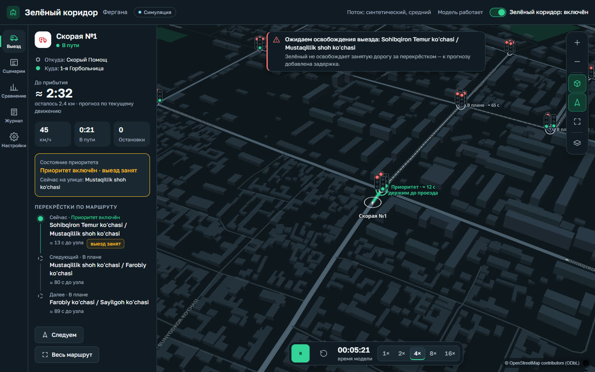
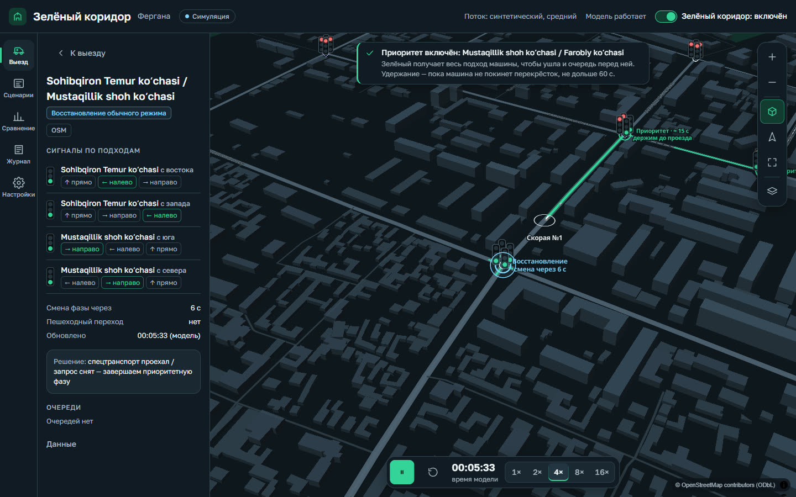
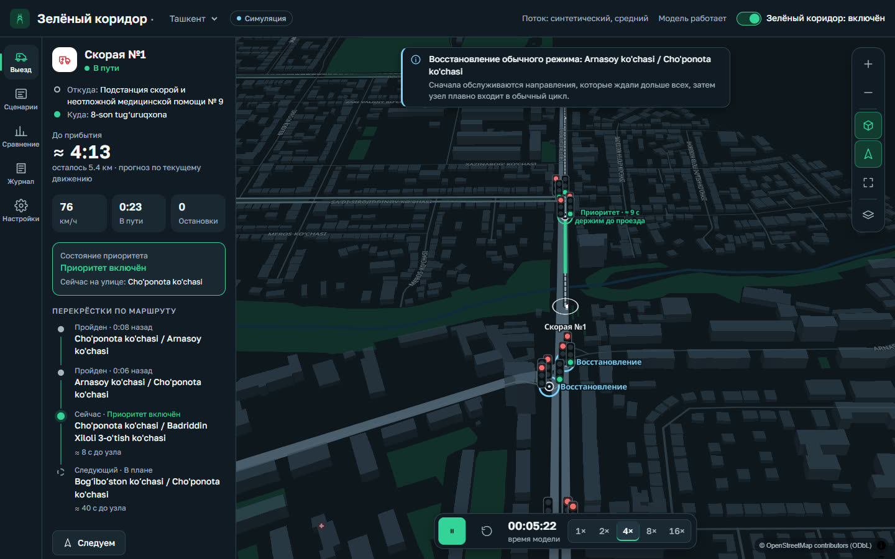

6,9 млн
вызовов приняла служба 103 за январь–июнь 2025 года — на 8,4 % больше, чем годом раньше.
Минздрав РУз · kun.uz«Зелёный коридор» — модуль для городского центра управления движением. Скорая, пожарные и полиция чаще всего застревают не из-за красного сигнала, а из-за машин, которые уже стоят перед ним и закрывают проезд. Система заранее переключает светофоры на маршруте: очередь уезжает до того, как подъедет экстренная машина, и она проходит перекрёсток по свободной полосе, не теряя манёвра. Проверено в модели на реальной дорожной сети Ферганы и Ташкента.
С сиреной экстренная машина вправе ехать на красный. Но если перед перекрёстком уже стоят машины, а на узкой улице им некуда прижаться, проезд закрыт — и скорая стоит вместе со всеми. Пожарные и полиция застревают так же. Здесь теряются минуты и случается больше всего аварий.
вызовов приняла служба 103 за январь–июнь 2025 года — на 8,4 % больше, чем годом раньше.
Минздрав РУз · kun.uzшансов пережить остановку сердца — за каждую минуту ожидания помощи.
Исследование 2024 г., Нидерландыаварий скорых происходит у светофоров. У машин того же размера — 18 %.
Prehospital Emergency Care, 2023, СШАоткрытых замеров потока машин по Фергане. Поэтому модель честно работает с синтетикой и умеет принимать реальные замеры.
Наш обзор 18 источниковТашкент переходит на интеллектуальную транспортную систему. Координация экстренных служб входит в её задачи. Мы предлагаем готовый алгоритм приоритета, который можно встроить в эту систему.
Утверждён для Ташкента: адаптивные светофоры и координация экстренных служб, интеграция с регионами до 2030 года.
daryo.uzЦентр организации дорожного движения Ташкента меняет светофоры и оборудование под интеллектуальную транспортную систему.
AKIpressТак сработал приоритет для экстренных машин на 37 перекрёстках в Пенсильвании (США).
US DOT ITS JPOБезопасные переходы фаз, возврат к программе, работа с двумя машинами. Проверено на реальных сетях Ферганы и Ташкента.
Система не включает весь маршрут сразу. Она следит за тремя ближайшими светофорами, раз в секунду пересчитывает время прибытия и заранее даёт зелёный направлению, откуда идёт экстренная машина, чтобы очередь перед ней успела уехать. Фазы меняются только безопасно.
Перекрёсток работает по своей программе. Скорая ещё в 900 м.
Наступил расчётный момент: перекрёсток получает запрос приоритета для одного конкретного направления.
Текущая фаза завершается полностью: минимальный зелёный, жёлтый, «все красные». Начатый пешеходный переход не обрывается.
Зелёный получает весь подход машины: очередь впереди уезжает, полоса свободна, у водителя остаётся место для манёвра. Держим, пока машина не покинет перекрёсток.
Первыми едут те, кто ждал дольше. Затем перекрёсток плавно возвращается в общий цикл.
старт = ETA − переключение − очередь − запас
Время прибытия считается по фактическому движению машины и скорости потока впереди. Если дорога за перекрёстком занята, система это видит и добавляет задержку в прогноз.
Если запросы конфликтуют, первой проезжает машина с более высокой срочностью от диспетчера, затем — та, что приедет раньше. Тип службы сам по себе ничего не решает.
Нет сигнала от машины 6 секунд — запрос снимается. Зелёный держится не дольше 60 секунд. Боковые улицы не ждут бесконечно.
Конфликтующие направления никогда не получают зелёный одновременно. Это проверяется на каждом шаге модели.
3D-карта, панель выезда и карточка каждого перекрёстка. Работает в браузере на ноутбуке и телефоне, в том числе без интернета.



Каждое сравнение — два прогона из одного и того же состояния: тот же поток, маршрут и момент выезда. А — обычные светофоры, Б — зелёный коридор. В обоих вариантах машина с сиреной вправе ехать на красный. Разница только в том, свободна ли перед ней дорога.
Мы отделяем наблюдения от допущений — на этом сайте, в интерфейсе и в отчёте.
Пилот начинается в режиме наблюдения: система считает и ведёт журнал, но не управляет светофорами, пока безопасность не доказана на данных.
Фергана и центр Ташкента, сравнение, журналы, 14 автоматических проверок.
2–4 перекрёстка Ташкента, три пика в будний день, калибровка модели.
2–4 недели: прогнозы системы сравниваются с реальными маршрутами бригад 103.
Реальный приоритет вместе с ГУБДД: программы светофоров, протокол связи, регламент.
Откройте демо, выберите скорую, пожарную или полицию и смотрите, как перекрёстки впереди освобождаются к её подъезду. Работает в браузере и на телефоне.